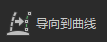
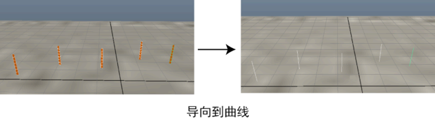

将选定的导向转化为曲线。使用此选项可以保存与您希望传递到其他描述或头发系统的导向相匹配的一组曲线。如果您希望为当前描述的导向定形，请改用“导向作为曲线”(Guides as Curves)工具。

- 导向(Guides)
-
设置在将导向转化为曲线后应该如何操作。
- 保持(Keep)
-
转化后同时显示导向和曲线。
- 隐藏(Hide)
-
在将选定的导向转化为曲线后隐藏这些导向。如果将曲线转化为导向，XGen 会显示隐藏的导向。
重要： 如果选择“隐藏”(Hide)，请使用 取消隐藏任何要将其转化回曲线的导向（曲线到导向）。否则，其他导向可能会和原始导向一起显示在同一点，会导致意外结果发生。使用“检查导向”(Check Guide)，确保没有复制导向。
取消隐藏任何要将其转化回曲线的导向（曲线到导向）。否则，其他导向可能会和原始导向一起显示在同一点，会导致意外结果发生。使用“检查导向”(Check Guide)，确保没有复制导向。 - 删除曲线(Delete Curves)
-
在将选定的导向转化为曲线后删除这些导向。如果将曲线转化为导向，XGen 会创建新导向。
- 锁定长度(Lock Length)
-
锁定曲线的长度，从而拉动端点时不会拉伸曲线。启用时，每个 CV 之间的间距不能更改。